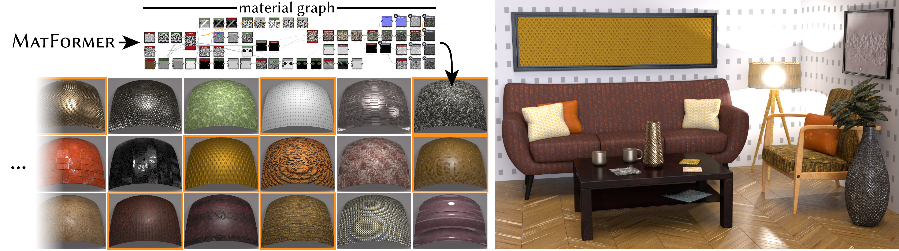

<html>
    <head>
        <title>MatFormer: A Generative Model for Procedural Materials</title>
        <meta http-equiv="Content-type" content="text/html; charset=utf-8">
        <link rel="preconnect" href="https://fonts.googleapis.com">
        <link rel="preconnect" href="https://fonts.gstatic.com" crossorigin>
        <link href="https://fonts.googleapis.com/css2?family=Roboto:wght@300&display=swap" rel="stylesheet">
        <link href="style.css" rel="stylesheet" />
        <link rel="stylesheet" href="https://cdnjs.cloudflare.com/ajax/libs/font-awesome/4.7.0/css/font-awesome.min.css">
        <link rel="stylesheet" href="https://cdn.jsdelivr.net/gh/jpswalsh/academicons@1/css/academicons.min.css">
    </head>
</html>
<body>

    <h1 class="project-title">MatFormer: <br /> A Generative Model for Procedural Materials</h1>

    <div class="authors">
        <a href="https://paulguerrero.net/">Paul Guerrero<sup>1</sup></a>
        <a href="http://www.miloshasan.net/">Miloš Hašan<sup>1</sup></a>
        <a href="http://www.kalyans.org/">Kalyan Sunkavalli<sup>1</sup></a>
        <a href="https://research.adobe.com/person/radomir-mech/">Radomír Mĕch<sup>1</sup></a>
        <a href="https://perso.telecom-paristech.fr/boubek/">Tamy Boubekeur<sup>1</sup></a>
        <a href="http://www0.cs.ucl.ac.uk/staff/n.mitra/">Niloy J. Mitra<sup>1,2</sup></a>
    </div>

    <div class="affiliations">
        <span><sup>1</sup>Adobe Research</span>
        <span><sup>2</sup>University College London</span>
    </div>

    <div class="project-conference">
        <a href="https://s2022.siggraph.org/">SIGGRAPH 2022</a>
    </div>

    <div class="project-icons">
        <a href="../papers/MatFormer.pdf">
            <i class="fa fa-file"></i> <br>
            Paper
        </a>
        <!-- <a href="">
            <i class="fa fa-github"></i> <br>
            Code
        </a>
        <a href="">
            <i class="fa fa-file-powerpoint-o"></i> <br>
            Slides
        </a> -->
    </div>
    
    
    We present MatFormer, a generative model for procedural materials that are represented as node graphs. MatFormer generates an arbitrary number of
editable, resolution-independent materials (left), that can be used in realistic scenes (right). All materials in the scene were generated by our method; some of
them are shown highlighted in orange on the left. Materials are generated as node graphs (top), where nodes correspond to image operators (each node shows
the operator output), and edges control the flow of information between nodes. User can adjust parameters directly using the parameterized material graphs.
    
    <h2 class="section-title">Abstract</h2>
    <div class="content">
        Procedural material graphs are a compact, parameteric, and resolution independent
        representation that are a popular choice for material authoring.
        However, designing procedural materials requires significant expertise and
        publicly accessible libraries contain only a few thousand such graphs.
        We present MatFormer, a generative model that can produce a diverse set of
        high-quality procedural materials with complex spatial patterns and appearance.
        While procedural materials can be modeled as directed (operation)
        graphs, they contain arbitrary numbers of heterogeneous nodes with unstructured,
        often long-range node connections, and functional constraints on
        node parameters and connections. MatFormer addresses these challenges
        with a multi-stage transformer-based model that sequentially generates
        nodes, node parameters, and edges, while ensuring the semantic validity
        of the graph. In addition to generation, MatFormer can be used for the
        auto-completion and exploration of partial material graphs.We qualitatively
        and quantitatively demonstrate that our method outperforms alternative
        approaches, in both generated graph and material quality.
    </div>

    <h2 class="section-title">Method</h2>
    <div class="content">
        
        <div style="padding-top:10px;">
            <p>
            Procedural material design (e.g., using a product such as Adobe
            Substance 3D Designer) typically involves creating a directed node
            graph, referred to as a material graph. Such graphs consist of a
            set of nodes — representing noise and pattern generators or operations
            on textures (e.g., filter kernels, transformations) — and edges —
            representing the flow of information from the output of the nodes
            to inputs of the subsequent nodes — finally producing image maps
            (e.g., roughness, normal, diffuse) for an analytic SVBRDF model. The
            output maps can be controlled by editing the parameters of the individual
            nodes. With complex material definitions regularly needing
            50+ nodes, authoring such graphs is a form of black magic, limited
            to a select handful of practitioners. Not surprisingly, the largest
            publicly-available texture dataset has only a few
            thousand such definitions, and non-expert users mainly select from
            these limited options. Hence, there is a demand for automatically
            generating procedural materials, or assisting with their creation.
            </p>

            <p>
            In this work, we introduce MatFormer, the first autoregressive
            generative model for material graphs. MatFormer leverages a
            transformer-based architecture to model a probability distribution over the
            space of procedural materials, and subsequently allows sample from
            this distribution. We found the choice of transformers, as opposed
            to LSTM, GRU, or graph networks, to be particularly suitable in
            this context, as transformers effectively handle sparse long-distance
            connections between graph nodes. However, in order to model the
            specific structure of material graphs, MatFormer does not generate
            them in a single pass. Instead, it runs in three sequential stages, each
            modeled with a dedicated transformer to capture dependencies: first,
            we generate a sequence of nodes; second, we generate parameters
            for each of the generated nodes; and finally, we generate directed
            edges connecting the input and output slots of the generated nodes.
            </p>
    </div>
        <div style="clear:both"></div>
    </div>

    <h2 class="section-title">Paper</h2>
    <div class="content" style="display: flex;">
        <a href="../papers/MatFormer.pdf"></a>
        <div style="width:auto; margin-left:10px; vertical-align:top;">
<pre style="margin-top:0px; white-space: pre-wrap;"><code>@article{guerrero2022matformer,
    author = {Guerrero, Paul and Hasan, Milos and Sunkavalli, Kalyan and Mech, Radomir and Boubekeur, Tamy and Mitra, Niloy},
    title = {MatFormer: A Generative Model for Procedural Materials},
    year = {2022},
    volume = {41},
    number = {4},
    doi = {10.1145/3528223.3530173},
    journal = {ACM Trans. Graph.},
    articleno = {46}
}</code></pre>
        </div>
        <div style="clear:both"></div>
    </div>

    <h2 class="section-title">Acknowledgements</h2>
    <div class="content">
        We would like to thank Romain Rouffet, Luc Chamerlat, Geoffrey
        Rosin, and Gaetan Lassagne for their time, suggestions, and helpful feedback.
    </div>


</body>